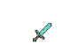

Server'a giriş yapman için yüklemen gerekenler
NeoForge | (Minecraft Versiyon 1.21.1), NeoForge ile çalışmaktadır.
Mod listesi | Mod Listesine Ulaşmak için Tıklayın
Hepsini aynı anda indirmek için butona tıklayın.

Modlu Minecraft Kurulum Rehberi
Low Cortisol Gaming tarafından
Neoforge'u kurmak basit o yüzden anlatmıyorum
Ama modları doğru yere kurmanız gerekiyor.
Neoforge kurulduktan sonra Minecraft Launcher'i açın, Installations kısmında Neoforge olacak, dosya semboline tıklayın
Dosyaların içinde Mods Klasörü olacak, yoksa siz ekleyin. Modları buraya atın.
Donec imperdiet consequat consequat. Suspendisse feugiat congue
posuere. Nulla massa urna, fermentum eget quam aliquet.
Donec imperdiet consequat consequat. Suspendisse feugiat congue
posuere. Nulla massa urna, fermentum eget quam aliquet.